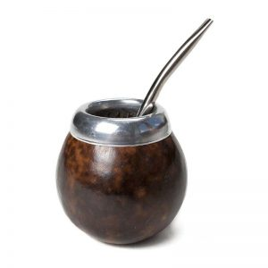
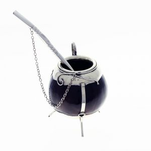

Fitz Roy, Provincia de Santa Cruz, Argentina @nachoestevo
Sobre el mate
El mate es una infusión hecha con hojas de yerba mate (Ilex paraguariensis), planta originaria de las cuencas de los ríos Paraguay y Paraná. Estas plantas previamente secadas, cortadas y molidas forman la yerba mate, la cual tiene sabor amargo debido a los taninos de sus hojas. Por esto, hay quienes gustan de endulzar un poco el mate con azúcar, stevia o endulzante no calórico, pero comúnmente se toma amargo. La espuma que se genera al «cebar» se debe a los glucósidos que la yerba mate contiene. Es consumido en América desde la época prehispánica por algunas etnias de origen tupí-guaraní, como los avá, los mbyá y los kaiowa, y también, en menor medida, por otras etnias que realizaban comercio con ellos, como los ñandevá, los taluhets (pampas antiguos) y los qom (tobas).
Preparación del mate
1. Llenar un termo con agua caliente

La temperatura aconsejable esta entre 70 y 80° C.
2. Arrojar yerba en el mate y agitar

Llena hasta las tres cuartas partes del mate. Luego, tapa con la mano la boca del mate, invertila y luego agitala un par de veces para quitarle el polvo.
3. Recostar, formar un hueco y derramar agua tibia

Recostá la yerba sobre una de las paredes del mate para así formar un hueco en la pared opuesta y, luego, colocá agua tibia suavemente.
4. Introducir la bombilla

Tapá con un dedo el orificio superior de la bombilla y colocala en el hueco que antes generaste.
5. Cebar

Se debe colocar poco agua por turno y siempre en el mismo lugar (al lado de la bombilla es la mejor alternativa). Importante: el cebador siempre es el mismo.
6. Compartir un momento

Comienza la ronda y es imprescindible respetar los turnos. Nada de saltear ni devolver favores ajenos al mate.
Video explicativo
Tipos de mate

Mate de calabaza
Es uno de los tipos de mates más tradicionales que existen. Son conocidos también con el
nombre
de
mates “poro” o mate “porongo” en el caso de los de mayor tamaño.
Se encuentran realizados en la fruta de la calabaza ya que su forma redondeada y la cascara
dura
que
la recubre en el exterior permiten que sea utilizada como mate.
Para formar el hueco del interior se debe extraer la pulpa. Luego, estas frutas se ponen a
secar
para que queden listas para ser decoradas artesanalmente, lo que le añade un plus muy
atractivo.

Mate de plata o alpaca
Estos mates son similares a los anteriores ya que también se encuentran realizados con
calabazas,
la
diferencia es que su decoración artesanal incluye adornos de metal como la plata y la
alpaca.
También hay mates fundidos en plata, es decir que están realizados completamente en este
metal.
El
trabajo comienza con el diseño, luego el fundido del metal y el moldeo con la forma deseada,
por
último se lo decora con pulido o grabado.
Mate de cuernos vacuno
Uno de los mates preferidos por los amantes de esta infusión son los confeccionados en
cuernos
vacunos.
Estos mates están realizados con astas y guampas que son más anchos en la parte de la base
para
que
tengan un buen apoyo. En su exterior son cubiertos con una capa de metal y decorados con
detalles
estéticos, generalmente en plata.
Se recomienda llenar el mate de agua y detergente y dejar reposar 24 horas antes de curar
utilizando
yerba mate ya que estos cuernos vacunos tienen grasa que debe ser eliminada.
Mate de madera
Los mates de maderas son muy vistosos ya que este es un material natural que aporta ese
detalle
rústico y sus decoraciones pueden ser muy variadas, según el gusto de cada persona.
Las maderas más utilizadas para los mates de madera son: quebracho, palo santo y roble. Cada
tipo de
madera influye en el sabor del mate por esta razón es que también se deben evitar maderas
aromáticas
ya que podrían afectar negativamente al sabor de la infusión.
Para evitar que la madera del mate acumule humedad o se quiebre con el uso se recomienda
curarlo
antes utilizando grasa vacuna, manteca o aceite.

Mate de caña
Estos mates se encuentran realizados con cañas de bambú. Este es un tipo de madera muy
resistente
ya
que se cultiva y crece en ambientes de temperaturas extremas, esta es una ventaja ya que
resiste
muy
bien al agua caliente.
Las cañas son seleccionadas para la fabricación de los mates, luego se las pule y se le
aplica
una
capa de barniz.
El sabor del mate en cañas de bambú es muy diferente al del resto, vale la pena probarlo.
Mate de vidrio
En la actualidad también se pueden encontrar mates de vidrio. Se trata de recipientes
fundidos en
vidrio, en la mayoría de los casos se trata de vidrio reciclado.
Una de las ventajas que tiene este tipo de mate es que el vidrio es un material que no tiene
efectos
en el sabor de la infusión. Con este mate se puede sentir el verdadero sabor de la yerba
mate.
Además hay que destacar que se trata de un mate que no necesita ser curado antes de usar y
que
se
lava fácilmente evitando que se acumulen restos de yerba, humedad u hongos en su interior.
Mate de metal
Se trata de mates muy duraderos ya que el metal es muy resistente a los golpes y caídas, como
también
a la corrosión y oxido.
No necesita ser curado ya que el metal no es un material poroso, por esta razón también se
destaca
como un mate de fácil limpieza lo que es importante para que no quede acumulado yerba.
La única desventaja de los mates de metal es que el calor del agua puede aumentar la
temperatura
del
metal y quemar las manos.

Mate de plástico
Por último tenemos a los mates de plástico que son los mates más modernos, son tendencia en
la
actualidad por sus colores y formas tan originales.
El plástico es un material sintético muy económico por lo que estos mates pueden conseguirse
a
un
precio accesible en el mercado.
Se destacan por ser muy estéticos con sus diseños modernos, pero también súper prácticos ya
que
no
necesitan ser curados, son de fácil limpieza, no acumulan bacterias y mantienen en
temperatura
el
agua del mate.
Variantes de la infusión
Mate amargo
En algunas partes del Cono Sur se prefiere beber mate amargo, especialmente en Paraguay, Uruguay, sur de Brasil, Argentina y Bolivia (departamento de Tarija y el Gran Chaco). Es la forma más habitual de tomar mate. También se lo conoce como cimarrón (chimarrão, en Brasil).
Mate dulce
La diferencia con el mate amargo consiste en que en cada cebada se incorpora azúcar a gusto del bebedor. Esta forma de preparación es muy difundida pocas regiones de Bolivia en el Chaco de Santa Cruz, en Chuquisaca y en el departamento de Tarija, En Argentina, como en la provincia de Santiago del Estero, Córdoba (Argentina), Cuyo, Región metropolitana de Buenos Aires, entre otros. En Chile, esta forma de preparación del mate está difundida mayoritariamente en zonas rurales. La cucharadita de azúcar o miel debe caer al borde de la zanja que forma la bombilla en la yerba, no por todo el mate. Una variante es endulzar solo el primer mate para cortar el amargor del primero, suavizando así los posteriores.
Mate de leche
La diferencia con el mate amargo es que en lugar de cebar con agua, se lo hace con leche y azúcar. Esta variante tiene la desventaja de no poder limpiar fácilmente la bombilla y el mate, por eso suelen utilizarse unos distintos a los de las variantes tradicionales. En el Paraguay, también se acostumbra a cebar lo que allí se denomina «mate dulce», que se prepara con leche caliente endulzada (o con azúcar dorada), cambiando la yerba por coco rallado, o poniendo primeramente yerba y sobre ella coco rallado.
Mate con otras hierbas
Es posible adicionar otras hierbas («yuyos») a la infusión (tanto al agua con que se ceba el mate como directamente a la yerba mate) para darle un sabor diferente o con fines medicinales. Es común el agregado de hierbas con propiedades digestivas o sedativas, por ejemplo: coca, peperina, poleo, melisa, toronjil, menta, cola de caballo, congorosa (que disminuye la acidez PH del mate), incayuyo, té de burro, ajenjo, carqueja, anís, etc.
Mate de té
El mate de té, es considerado otra variante del mate dulce; no se realiza con yerba mate y es muy común en la provincia de Entre Ríos y Uruguay y muy popular entre los chicos y adolescentes. Como su nombre lo indica, se prepara con té (negro generalmente) y limón como ingredientes principales; no se usa la calabaza del mate, sino algún recipiente similar a una taza (ya que existe una tradición que dice que el mate dulce y con té estropearía el sabor de la calabaza), lo que tienen en común es que sí se utiliza bombilla.
Tereré
Una forma de tereré, consistente en una mezcla de agua bien fría con yerba mate, remedios refrescantes naturales (hierbas medicinales) y hielo. Como hierbas suelen emplearse la menta (Mentha arvensis), la menta peperina, el cedrón (Aloysia triphylla), burrito, el kokú (Allophylus edulis), la cola de caballo o las cáscaras de limón.
Mate cocido
El mate cocido (chá mate, en portugués) es una infusión. La yerba mate se hierve en agua, se cuela y se sirve en una taza. Es una bebida que reemplaza al café en el desayuno o la merienda. Se consume en Bolivia, Argentina, Brasil, Paraguay, y Uruguay. Varias empresas ofrecen yerba mate envasada en saquitos, similares a los de té, o aún mate cocido en forma soluble. En Paraguay se consume culturalmente el mate o el tereré con plantas medicinales como uñas de gato, raíz dientes de León, etc.